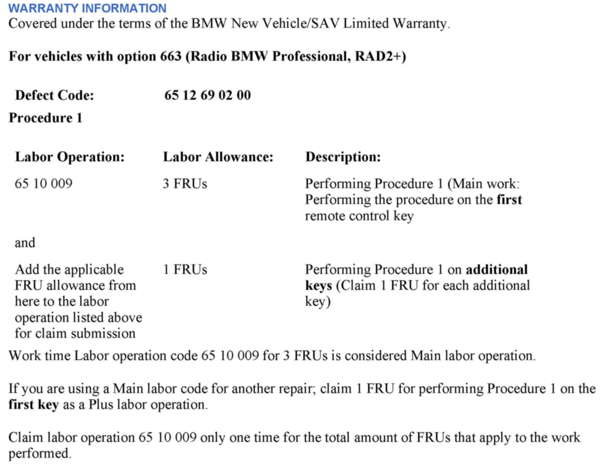
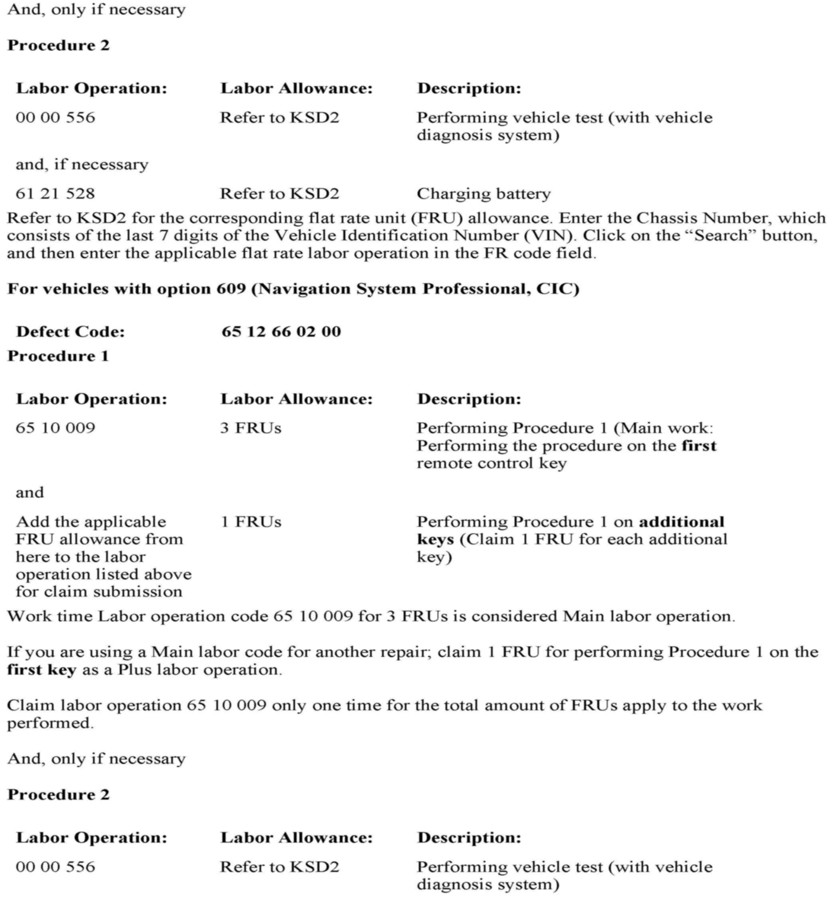
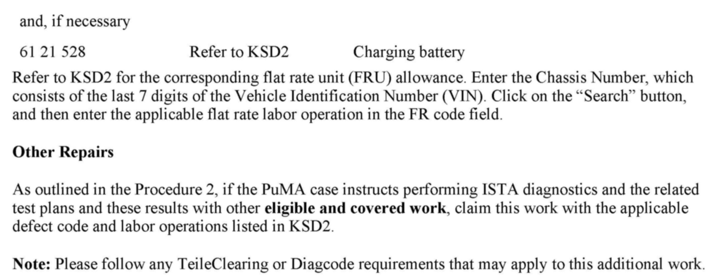

Audio Sys- Stored FM Stations Intermittently Default To FM 87.7
SI B65 11 12Audio, Navigation, Monitors, Alarms, SRS
September 2012
Technical Service
SUBJECT
Intermittently Stored FM Radio Stations Default to FM 87.7
MODEL
E82
E82E
E88
E89
E90
E91
E92
E93
With:
^ Option 663 (Radio BMW Professional, RAD2+)
or
^ Option 609 (Navigation System Professional, CIC)
E60
E61
E63
E64
E70
E71
E72
E84
F01
F02
F04
F06
F07
F10
F12
F13
F25
F30
With option 609 (Navigation System Professional, CIC)
SITUATION
Intermittently, the stored FM radio stations default to FM 87.7 after vehicle start-up. Normal operation is restored after the vehicle has entered sleep mode (approx. 16 minutes after Terminal R off).
CAUSE
The radio part of the head unit is in default mode.
CORRECTION
Do not replace parts!
Reproduce the complaint.
Perform the procedure outlined below with all remote control keys assigned to the vehicle (including the customers spare keys).
PROCEDURE
Procedure 1 - Perform this procedure with each assigned remote control key:
1. Unlock - Lock - Unlock the vehicle with the remote control key.
2. Check the stored FM radio stations for each remote control key.
3. If there are no FM radio stations stored for one or more of the remote control keys, store some FM radio stations for each remote control key.
4. Let the vehicle enter sleep mode (approx. 16 minutes after Termina R off) to properly store the FM radio stations for each remote control key.
5. Retest the functionality.
Procedure 2 - only if Procedure 1 does not resolve this issue:
1. Submit a PuMA case with the subject "Radio stations default to FM87.7."
2. Include the answers on the following questions in the PuMA case:
^ Are relevant faults stored?
^ What is the battery voltage before and while starting the vehicle?
^ Are external components connected?
^ What are the weather conditions when it happens (cold/hot)?
Note:
When the ISTA system message displays: Battery voltage only "XX.XX" V. Please connect charger Please note the displayed battery voltage reading in the repair order comments section.



WARRANTY INFORMATION